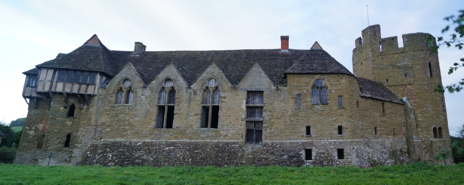
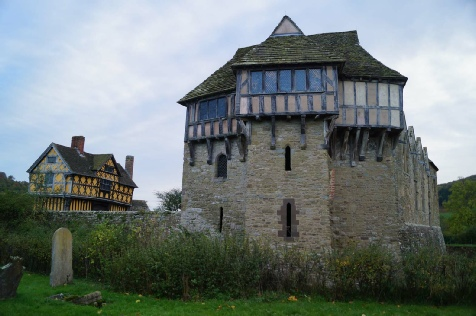
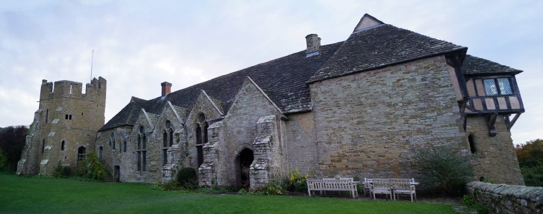

STOKESAY CASTLE, SY7 9AH
GETTING THERE
Postcode: SY7 9AH
Lat/Long: 52.4302N 2.8313W
Notes: Situated in the small village of Stokesay. Some sign posts and dedicated (pay and display) car park at the site.
WHAT IS THERE TO SEE?
A well preserved fortified manor house that was slighted following the Civil War but thereafter heavily modified to turn it back into a comfortable lodging. Access is possible upto the top of the tower. The gatehouse is an interesting affair being a wooden framed building.
VISIT OFFICIAL SITE (Opens in new window)
Managed by English Heritage .
ADDITIONAL NOTES
1. In the thirteenth century wool was Englandâs most important export and a source of huge wealth both to the Merchants and to Royal coffers. On the advice of Laurence of Ludlow, Edward I imposed a huge levy on the wool trade which financed his continental wars.
Built by a wool merchant and money-lender, Stokesay Castle was designed as a place of business rather than strength. Nevertheless it provided protection to the vast wealth accrued by its owners and later was attacked and surrendered during the Civil War.
HISTORY OF STOKESAY CASTLE
The castle at Stokesay was built circa-1285 by Laurence of Ludlow who was a wool merchant and money lender. His clientell in the latter including some of the most prominent men of the Border Marches including Edmund Mortimer, Lord of Wigmore and Richard Fitzalan, Earl of Arundel. Dealings in such society made owning a castle, given the status that bestowed, highly desirable. The location of Stokesay, on the main road between Shrewsbury to Ludlow as well as being situated on the River Onny, made it a prime location for a castle built with trade in mind. This perhaps worked as in the 1290s Laurence extended his influence further and became a key adviser to Edward I on financial policy in particular taxation on wool.
The castle continued under the ownership of the Ludlows until 1498 when the male line died out. It then passed to the Vernon family who held it until the late-Elizabethan period. It latter came into the possession of a William Craven who is believed to have built the impressive timber Gatehouse visible today.
In 1642 the castle was held for the King albeit its location in Royalist heartland meant it saw no action until 1645. On their way to capture Ludlow Castle , a Parliamentary force besieged and then took the surrender of Stokesay Castle. After the war the castle was partially demolished to make it indefensible. The remains were rebuilt into a country home which was occupied, to an extent, as recent as 1992.
© Copyright 2016 | Terms and Conditions (inc Cookie Policy) | Contact Us
Recovered original photographs, plans and images


